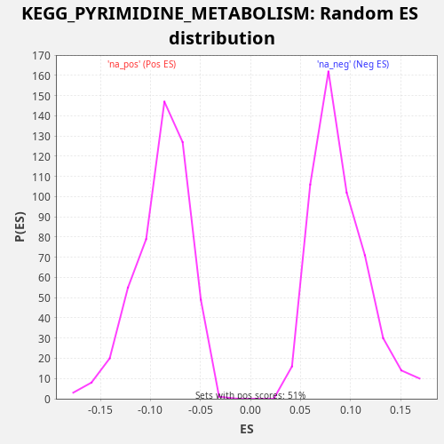

Profile of the Running ES Score & Positions of GeneSet Members on the Rank Ordered List
The same image in compressed SVG format
| Dataset | CCLE |
| Phenotype | NoPhenotypeAvailable |
| Upregulated in class | na_pos |
| GeneSet | KEGG_PYRIMIDINE_METABOLISM |
| Enrichment Score (ES) | 0.22728735 |
| Normalized Enrichment Score (NES) | 2.5686338 |
| Nominal p-value | 0.0 |
| FDR q-value | 3.9661198E-4 |
| FWER p-Value | 0.004 |
| SYMBOL | RANK IN GENE LIST | RANK METRIC SCORE | RUNNING ES | CORE ENRICHMENT | |
|---|---|---|---|---|---|
| 1 | CDA | 460 | 0.047 | -0.0085 | Yes |
| 2 | RRM2B | 897 | 0.009 | -0.0159 | Yes |
| 3 | ITPA | 1233 | 0.004 | -0.0191 | Yes |
| 4 | POLR3B | 1354 | 0.004 | -0.0133 | Yes |
| 5 | CTPS1 | 1928 | 0.001 | -0.0265 | Yes |
| 6 | POLD1 | 2125 | 0.001 | -0.0239 | Yes |
| 7 | POLD2 | 2141 | 0.001 | -0.0136 | Yes |
| 8 | POLR2G | 2396 | 0.001 | -0.0135 | Yes |
| 9 | POLR1D | 2462 | 0.001 | -0.0053 | Yes |
| 10 | DCTD | 2641 | 0.001 | -0.0019 | Yes |
| 11 | TYMS | 2941 | 0.000 | -0.0036 | Yes |
| 12 | POLR1C | 3012 | 0.000 | 0.0043 | Yes |
| 13 | PRIM2 | 3072 | 0.000 | 0.0127 | Yes |
| 14 | POLR2H | 3276 | 0.000 | 0.0150 | Yes |
| 15 | POLR2I | 3377 | 0.000 | 0.0217 | Yes |
| 16 | TXNRD1 | 3640 | 0.000 | 0.0216 | Yes |
| 17 | PNP | 3816 | 0.000 | 0.0251 | Yes |
| 18 | ENTPD6 | 4012 | 0.000 | 0.0277 | Yes |
| 19 | POLR3H | 4150 | 0.000 | 0.0329 | Yes |
| 20 | POLR2E | 4346 | 0.000 | 0.0355 | Yes |
| 21 | UCK2 | 4464 | 0.000 | 0.0415 | Yes |
| 22 | NT5C2 | 4480 | 0.000 | 0.0517 | Yes |
| 23 | UPP1 | 4546 | 0.000 | 0.0599 | Yes |
| 24 | ENTPD4 | 4702 | 0.000 | 0.0642 | Yes |
| 25 | NME2 | 5065 | 0.000 | 0.0599 | Yes |
| 26 | POLA2 | 5398 | 0.000 | 0.0568 | Yes |
| 27 | NME1 | 5452 | 0.000 | 0.0654 | Yes |
| 28 | POLR2C | 5690 | 0.000 | 0.0663 | Yes |
| 29 | POLA1 | 5860 | 0.000 | 0.0701 | Yes |
| 30 | POLR3K | 5985 | 0.000 | 0.0758 | Yes |
| 31 | PNPT1 | 6075 | 0.000 | 0.0829 | Yes |
| 32 | POLR1E | 6260 | 0.000 | 0.0860 | Yes |
| 33 | CTPS2 | 6304 | 0.000 | 0.0951 | Yes |
| 34 | CMPK2 | 6389 | 0.000 | 0.1024 | Yes |
| 35 | POLR2L | 6429 | 0.000 | 0.1117 | Yes |
| 36 | POLR3C | 6693 | 0.000 | 0.1115 | Yes |
| 37 | TK1 | 6794 | 0.000 | 0.1181 | Yes |
| 38 | RRM1 | 6849 | 0.000 | 0.1267 | Yes |
| 39 | NT5C | 6920 | 0.000 | 0.1347 | Yes |
| 40 | AK3 | 6974 | 0.000 | 0.1433 | Yes |
| 41 | UMPS | 7103 | 0.000 | 0.1488 | Yes |
| 42 | UPB1 | 7201 | 0.000 | 0.1556 | Yes |
| 43 | NME6 | 7973 | 0.000 | 0.1341 | Yes |
| 44 | CMPK1 | 8308 | 0.000 | 0.1309 | Yes |
| 45 | POLE | 8603 | 0.000 | 0.1294 | Yes |
| 46 | ENTPD1 | 8737 | 0.000 | 0.1347 | Yes |
| 47 | PRIM1 | 8869 | 0.000 | 0.1400 | Yes |
| 48 | ENTPD5 | 9220 | 0.000 | 0.1362 | Yes |
| 49 | CANT1 | 9241 | 0.000 | 0.1462 | Yes |
| 50 | DPYD | 9370 | 0.000 | 0.1517 | Yes |
| 51 | POLE3 | 9429 | 0.000 | 0.1602 | Yes |
| 52 | DTYMK | 9674 | 0.000 | 0.1608 | Yes |
| 53 | POLE4 | 10785 | -0.000 | 0.1250 | Yes |
| 54 | POLR2D | 10993 | -0.000 | 0.1272 | Yes |
| 55 | NT5C3A | 10994 | -0.000 | 0.1380 | Yes |
| 56 | POLR2A | 11076 | -0.000 | 0.1455 | Yes |
| 57 | POLR2K | 11083 | -0.000 | 0.1561 | Yes |
| 58 | POLR2F | 11282 | -0.000 | 0.1587 | Yes |
| 59 | POLR3GL | 11801 | -0.000 | 0.1478 | Yes |
| 60 | DHODH | 12073 | -0.000 | 0.1472 | Yes |
| 61 | CAD | 12103 | -0.000 | 0.1569 | Yes |
| 62 | RRM2 | 12220 | -0.000 | 0.1629 | Yes |
| 63 | POLE2 | 12248 | -0.000 | 0.1726 | Yes |
| 64 | POLR2B | 12268 | -0.000 | 0.1827 | Yes |
| 65 | TK2 | 12359 | -0.000 | 0.1898 | Yes |
| 66 | POLR2J | 12409 | -0.000 | 0.1986 | Yes |
| 67 | DUT | 12564 | -0.000 | 0.2030 | Yes |
| 68 | UCKL1 | 12810 | -0.000 | 0.2036 | Yes |
| 69 | POLD3 | 13080 | -0.000 | 0.2031 | Yes |
| 70 | NME7 | 13385 | -0.000 | 0.2012 | Yes |
| 71 | POLR1A | 13598 | -0.000 | 0.2032 | Yes |
| 72 | UCK1 | 13674 | -0.000 | 0.2109 | Yes |
| 73 | NT5M | 13775 | -0.000 | 0.2176 | Yes |
| 74 | UPRT | 13803 | -0.000 | 0.2273 | Yes |
| 75 | POLR3F | 14069 | -0.000 | 0.2270 | No |
| 76 | POLR2J2 | 15550 | -0.000 | 0.1757 | No |
| 77 | NT5C1B | 15626 | -0.000 | 0.1834 | No |
| 78 | POLR1B | 16061 | -0.000 | 0.1760 | No |
| 79 | POLR3G | 16080 | -0.000 | 0.1861 | No |
| 80 | NME4 | 16088 | -0.000 | 0.1967 | No |
| 81 | DCK | 16479 | -0.000 | 0.1912 | No |
| 82 | POLR3D | 16536 | -0.000 | 0.1997 | No |
| 83 | POLR2J3 | 16878 | -0.000 | 0.1963 | No |
| 84 | POLD4 | 18049 | -0.001 | 0.1579 | No |
| 85 | NME3 | 18819 | -0.001 | 0.1365 | No |
| 86 | NT5E | 18946 | -0.001 | 0.1421 | No |
| 87 | ENTPD3 | 18977 | -0.001 | 0.1517 | No |
| 88 | POLR3A | 19593 | -0.002 | 0.1367 | No |
| 89 | TYMP | 19977 | -0.003 | 0.1315 | No |
| 90 | TXNRD2 | 21521 | -0.015 | 0.0775 | No |
| 91 | NUDT2 | 21718 | -0.020 | 0.0801 | No |
| 92 | ENTPD8 | 22037 | -0.033 | 0.0776 | No |

{kind=link}
{kind=link}